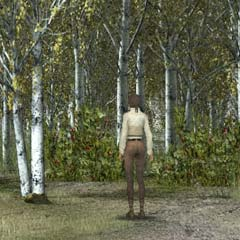
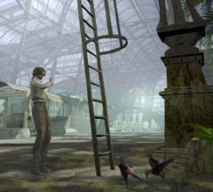
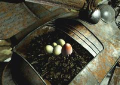
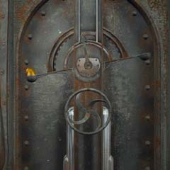
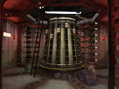

| 概要 | 地図 | |
| 淡いヒント集 | ヒント集 | 的確なヒント集 |
| 攻略最短ルート | Syberia 攻略へ |
| << 前の段階へ | 地域選択へ | 次の段階へ >> |
バロクシュタット
|
駅にて(中盤)
ついにある植物の存在を確かめたあなたは、駅長から真実を教えられるだろう。これにより、今まで曇っていた世界が少しはれ、前へ進めるはずだ。このとき、あなたがやらなければらないことは、 ・ソービニヨン葡萄の回収 ・ポンス教授にある人形を渡す ・実験室から、重要なアイテム3つを拝借 ・駅のハシゴを上り、あるアイテムを入手 ・カラクリ人形の修理 である。ポンス教授に渡すべき人形はあなたもよく知っているはずだ。
葡萄畑
 ・葡萄畑では忘れずにソービニヨン葡萄を回収しなくてはいけない。 ・これは、何に使うものだろうか。図書館で入手した本が役に立つだろう。
凶暴な鳥
 ・この鳥がいなくなればはしごに登れる。図書館で入手した本が役に立つだろう。 ・この上には重要なアイテムがある。忘れずに回収しなくてはならない。
鳥のカラクリ人形
 ・カラクリ人形には鳥が巣を作ってしまっている。この巣の中に一つ奇妙な卵が見えるだろう。それは、カッコウの卵である。 ・いくら手を伸ばしても卵が採れないはずだ。何か、道具を利用しなくてはならない。 ・その道具はどこにあるだろうか? まだ解いていない謎があれば、それを解けば手にはいるかもしれない。
実験室
 
・ポンス教授にある人形を渡すと、実験室に通してくれるだろう。 ・ここには重要なアイテムがいくつか置いてある。 ・画像は小さいのでわかりにくいので、実際のゲーム画面を見てよく調べて欲しい。きっと、重要なものが見つかるはずだ。 ・使い方の分からないアイテムは、図書館の本を見ることで手がかりがつかめるだろう。
演奏台の扉
 ・カラクリ人形を修理するにしても、まずはここが開かなくてはどうにもならない。 ・どうやれば開くだろうか。 ・上のはかりの針がまっすぐ上を向けば、何かがおこりそうだ。 ・黄金の物体は卵形をしている。これは、何かのヒントだろう。
演奏台地下
 ・ここを解決できれば、演奏台のカラクリ人形達は再び演奏を始める。 ・どうすれば、いいだろうか? 難しく考える必要はない。
駅長
・くどいようだが駅長である。 ・彼は謝罪の印に、重要なアイテムをくれるだろう。ありがたく受け取っておこう。 |
| << 前の段階へ | 地域選択へ | 次の段階へ >> |
| 概要 | 地図 | |
| 淡いヒント集 | ヒント集 | 的確なヒント集 |
| 攻略最短ルート | Syberia 攻略へ |
Syberia
| 目次へ戻る | ページの上部へ |